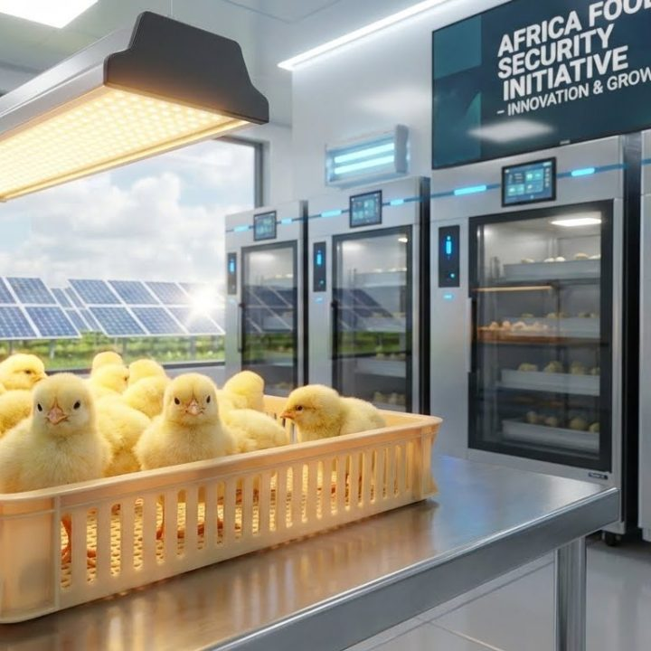

Empowering African farmers and agribusiness stakeholders through practical knowledge, sustainable finance, and value-chain-driven solutions.
Through our online learning hub, farmers can purchase courses, access mentorship, and connect with companies that supply renewable and sustainable farming equipment.
DOAF also partners with NGOs, agribusinesses, and development agencies to design capacity-building programs for farmers, cooperatives, and agricultural staff.
Our media arm shares real-life farmer success stories, podcast episodes, and lessons from the field — inspiring others to build resilience and innovation in agriculture.
Beyond training, DOAF connects to our sister platforms — Solams Green Market (for solar and renewable solutions) and King Solomon's Studios (for creative and educational storytelling).
Join the DOAF community — where learning meets opportunity, and farming becomes a story worth telling.
Explore Opportunities
Founder & Business Analyst
Solomon is a Business Analyst, Banker, and Certified Expert in Sustainable Agricultural Finance and Extension, with over 16 years of experience across agricultural finance, value chain development, extension services, and investment advisory.
He founded Diary of a Farmer to address structural gaps between African farmers, finance providers, and global markets. His work focuses on building investment-ready agricultural models, particularly within poultry and livestock value chains, that combine technical viability with financial discipline and sustainability.
Veterinary Doctor & Partner
Dr. Kola Adegunwa is a Veterinary Doctor with over 20 years of professional experience across local and international livestock systems. He provides technical leadership in animal health, poultry production, hatchery operations, biosecurity, and disease risk management, ensuring that production systems supported by Diary of a Farmer meet global best practices.
Technology Officer
Roland Felix is a technology professional with over 9+ years of professional experience in building custom digital solutions for businesses and organisations, ranging from mobile app development to web applications. Equipped with vast knowledge in the use of artificial intelligence, he seeks to deliver fast, reliable, high-end solutions to farmers across Africa.
Become part of a growing network of farmers, cooperatives, agribusinesses, and investors working together to transform African agriculture. Access finance, global markets, and sustainable growth opportunities.
Join Now